This is an exciting tour around the Visayas region. During this tour you will be doing some snorkeling, canyoneering, swimming, trekking and standup paddle board. You will be seeing a lot of different types of fishes and also a small primate that is endemic to the Philippines called the Philippine Tarsier. Try some local dishes. Get your memory cards ready as for sure you will be taking a lot of photos as the places you will be visiting are totally social media friendly.
Visayas Tour
Slideshow Gallery
An Adventure in The Visayas
|
15 days Start and end in Mactan Island | |
| Tour Operator: Kapwa Travel | Max group size: 5 |
| Age range: 8 to 60 | Operated in: English |
| Tour id: 00002 | Hygiene Measure: Included |
| Private available: Available per request with additional payment | |
Highlights
|
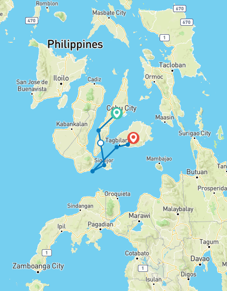 |
Ready-to-book adventures, personalized
| Personal Make your adventure more you | Private Enjoy a tour focused solely on your travel group |
| Professional Access our Travel Experts' insider knowledge | Protected Travel within your own bubble |
Itinerary
Start in Cebu City and end in Bohol! With the Active tour An Adventure in The Visayas , you have a 8 days tour package taking you through Cebu City, Philippines and 6 other destinations in Philippines. An Adventure in The Visayas includes accommodation in a hotel as well as flights, an expert guide, insurance, meals, transport.
Cebu
Home to nearly 170 islands, Cebu lives up to its moniker as "The Gateway to a Thousand Journeys." There isn't a shortage of explorations to do here - not to mention good Filipino food to sate your cravings in between and some of the best Philippines luxury resorts, easily making it one of the best tourist spots in the Philippines.
History aficionados can revel in Spanish-era edifices just minutes from the airport, while beach and sea lovers get access to beautiful beaches and dive spots whether their base is in the capital or the extreme north or south. You won't run out of tours and activities to try in Cebu, and because of its location, accessibility, and its international airport, you can also visit nearby destinations.
Things to do:
-
Experience Canyoneering to Kawasan Falls
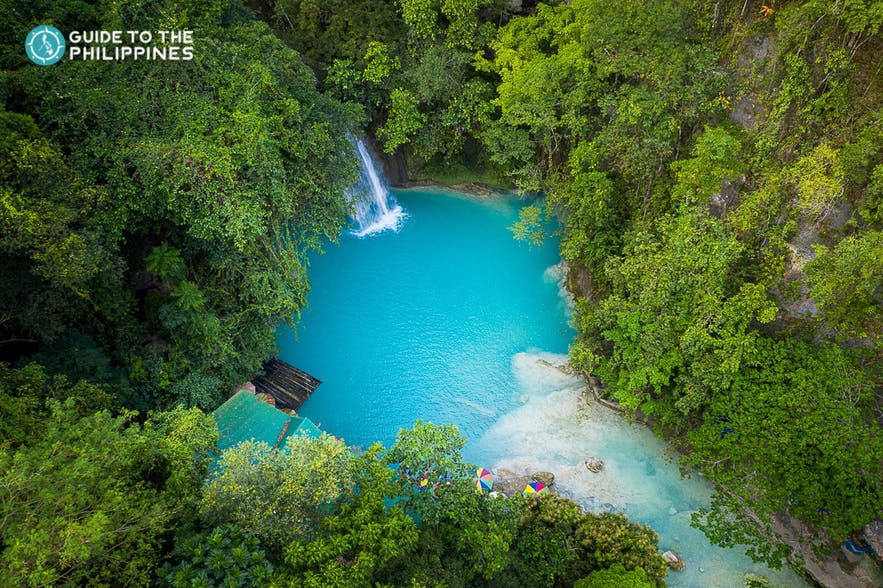
Trying a canyoneering tour to Kawasan Falls is an exhilarating water adventure that takes you through towering gorges and stalactite boulders. You get to swim and rappel through the river canyons, and even jump off 30-foot high cliffs into the blue pools of Kawasan Falls.
-
Witness the Grandeur of the Temple of Leah
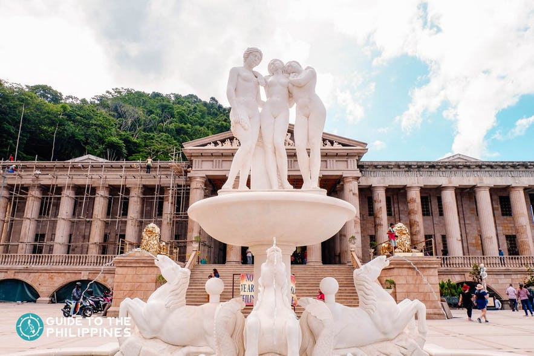
Hailed as the Taj Mahal of Cebu, the Temple of Leah has become one of the most famous landmarks in Cebu. This magnificent building is a sight to behold and a favorite Cebu activity for taking Instagram-worthy shots.
-
Smell the Flowers at Sirao Garden
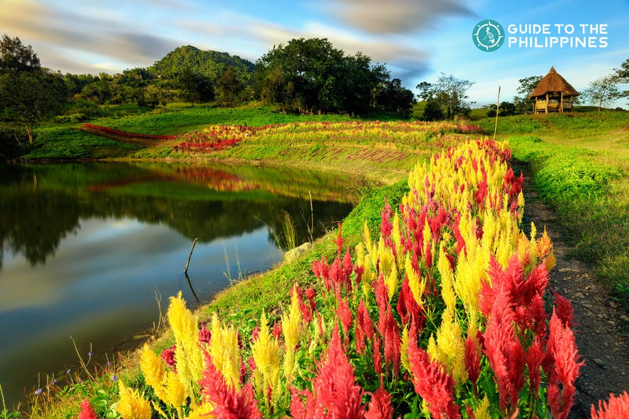
Another excellent Instagram-worthy spot in Cebu’s hillside is Sirao Garden. Dubbed as the “Little Amsterdam” of Cebu, this picturesque flower farm is located in the highlands of Busay.
-
Learn About Catholicism in the Philippines at Magellan’s Cross
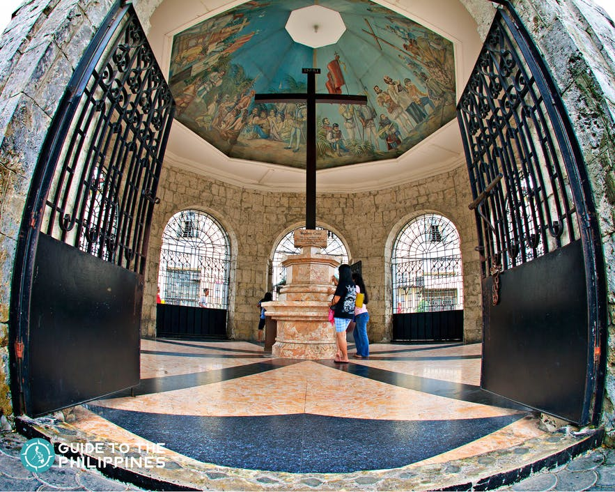
If you’re planning to visit the historic Cebu spots, Magellan’s Cross is an excellent place to start. The province of Cebu has a rich history, and it has witnessed several monumental events. One such event is the birth of Catholicism in the Philippines, marked by Magellan’s planting of a cross on the island.
-
Take a Leisurely Hike to Osmeña Peak
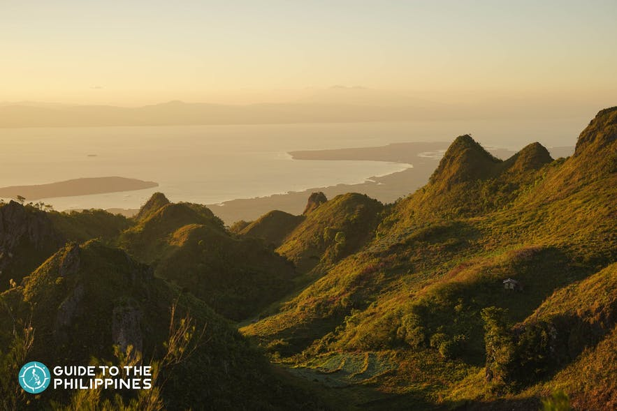
Standing at 1,013 meters above sea level, Osmeña Peak is Cebu’s highest. The peak is one of several spire-like formations comprising the Mantalongon Mountain Range in Dalaguete. The town of Dalaguete is known as the “Vegetable Basket of Cebu” because of the crops it supplies to the whole province.
Suquijor
When someone mentions Siquijor, one can’t help but think of magic and mystery. While some stories say it’s true, the only magic you should look forward to is the one brought by the enchanting Siquijor tourist spots that will make you want to walk straight into a beautiful trap.
It is a small island province located in the Central Visayas region oozing with pristine beaches, beautiful diving spots, waterfalls, and a cave. It used to be known as the Island of Fire enveloped by mystic traditions such as witchcraft, healing, spiritual rituals.
Things to do:
-
Lugnason Falls
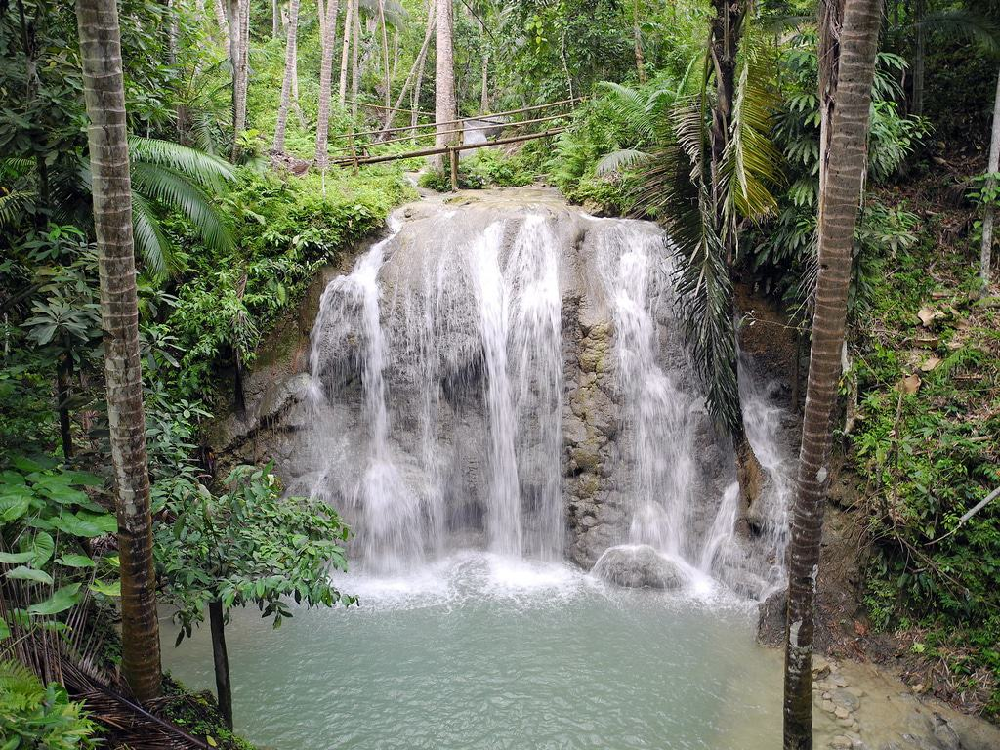
No visit to a Philippine island would be complete without a trip to a magnificent waterfall. Lugnason Falls is idyllic with clear rushing water that spills out into a turquoise basin below. The depth of the pool is perfect for swimming and the pressure from the falls is usually ideal for getting an aqua back massage.
-
Tubod Marine Sanctuary
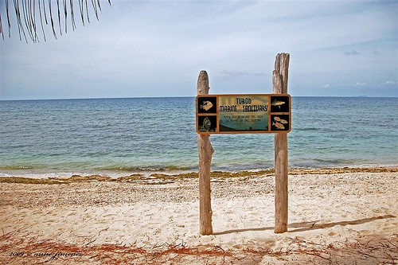
Located right in front of Coco Grove Beach Resort, there is so much to explore in this a 7-hectare enclave. Above ground you have the choice to lounge on the floating raft with sun chairs or take the kayak out and about. Underwater, you can grab a snorkel and get acquainted with the massive amount of sea life just hanging out.
-
Paliton Beach
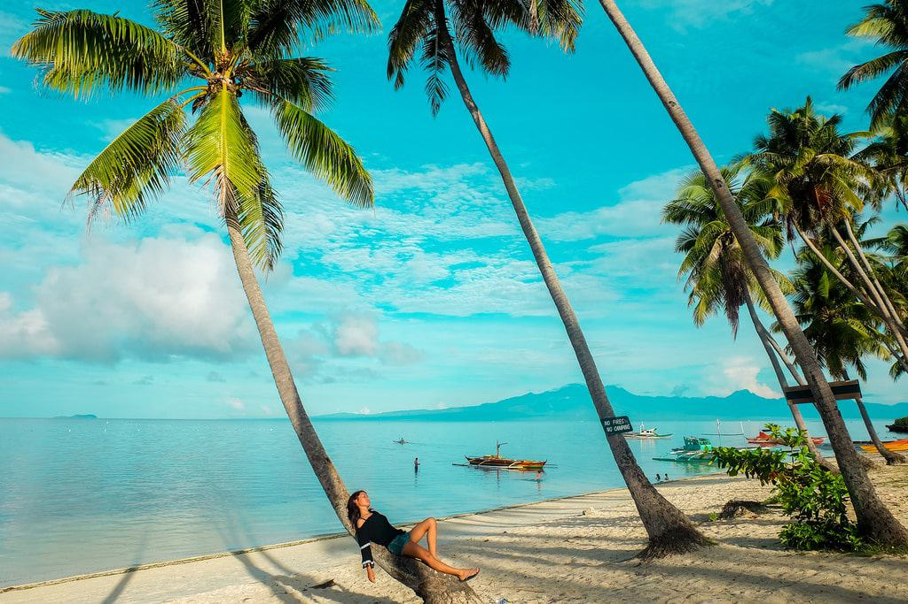
Located near the town of San Juan is Paliton Beach. This beach has no major public access and you might even miss it if you were looking for it on your own- it’s that hidden.
Hire a tricycle to take you and he will point out the small, indiscreet path through an undeveloped plot of land. As you make your way through, the beach will be waiting to greet you! -
Century Old Balete Tree
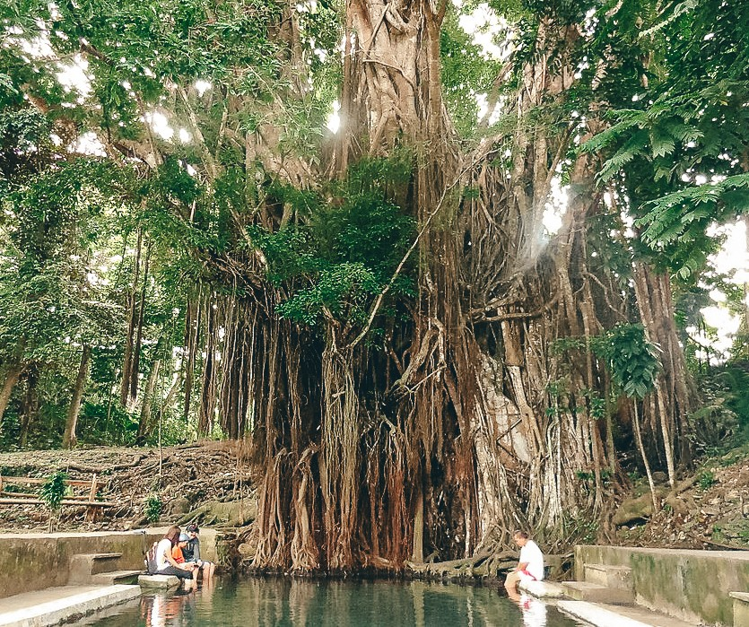
Interesting point, Siquijor is meant to be a mystical island, with a lot of magic in play, and this is one of the enchanted trees on the islands. It's pretty old, at over 400 years, so it's quite impressive that it's still standing! This will be easy to fit on a Siquijor itinerary as it's just off the main ring road around the island and as far as I'm aware there is no entrance.
-
Siquijor Butterfly Sanctuary
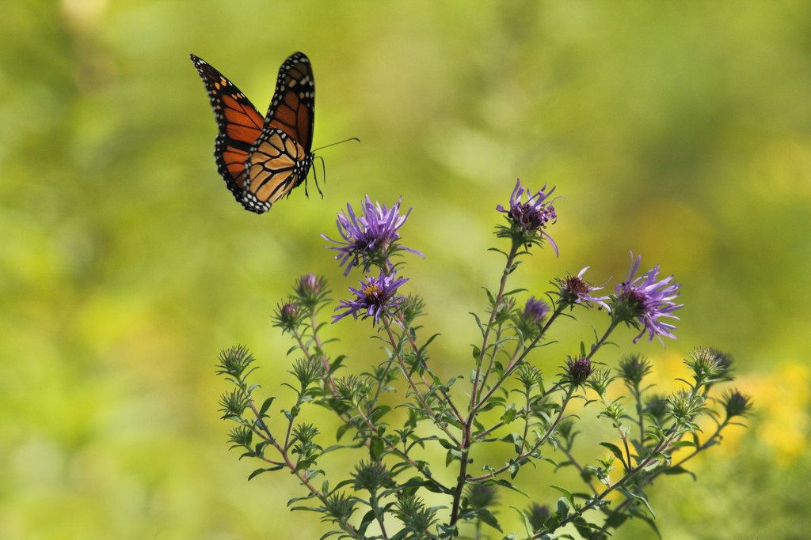
The Butterfly Sanctuary is one of the places to visit in Siquijor Bradley and I didn't visit. I’ve been to a few butterfly sanctuaries over the years, and I love butterflies, but we didn't make it to this one whilst we were there. However, if you’ve got some spare time, then it’s a cheap and cheerful thing to do in Siquijor. And actually, you can pretty much guarantee a Butterfly sanctuary is going to be beautiful.
Bohol
One of the best tourist spots in the Philippines that deserves worldwide recognition is Bohol. It's well-known for being the home to the iconic Chocolate Hills and sanctuaries of tarsiers.
But what many travelers don’t know is that it’s also a haven of nature’s treasures, blessed in all things ecological. To balance it out, Bohol is also rich in history, being a fountainhead of our country’s Christianization.
Things to do:
-
Visit the Chocolate Hills
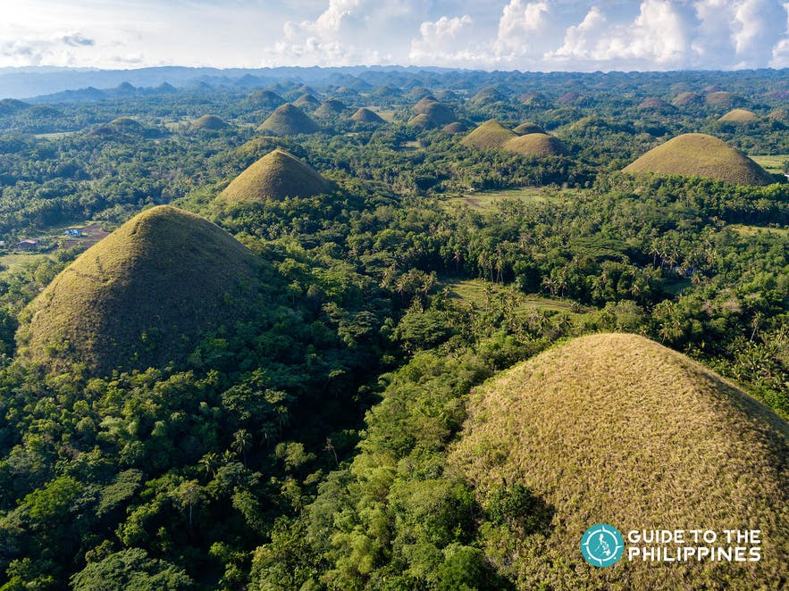
Bohol's claim to fame is unique geological formations of over 1000 cone-shaped hills that change in color depending on the season – the Chocolate Hills. You can view the hills from the Chocolate Hills Complex where there’s a viewing deck with a stunning 360° view of the cone-shaped hills.
-
Explore Hinagdanan Cave
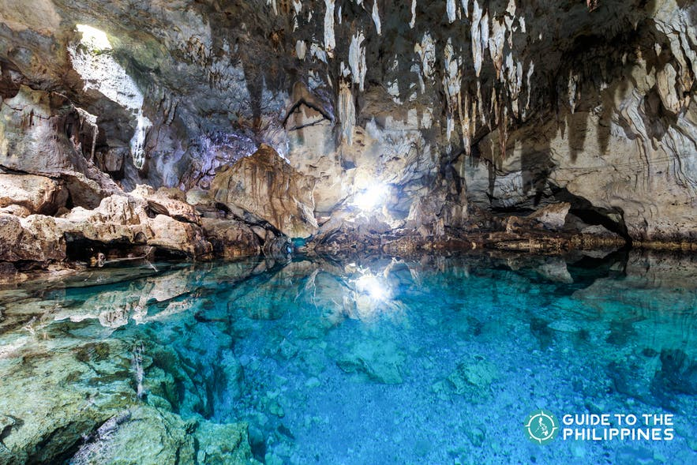
Hinagdanan Cave excursions are a must-add in any Bohol itinerary. Not only because of its beauty, but it's also easily accessible from the Chocolate Hills and waterfall destinations in the province.
The Hinagdanan Cave features a pool of clear water at the bottom. You can swim here under the mesmerizing sight of stalactites and stalagmites. -
Cruise Along the Loboc River on a Boat or Paddleboard
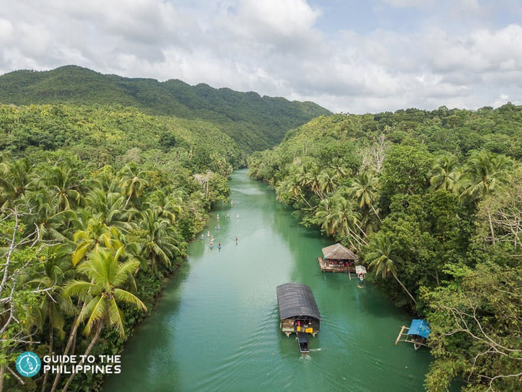
One of Bohol’s most beautiful natural attractions is the Loboc River. This beautiful river is a wonder of nature that has been preserved through the combined efforts of the local authorities and the residents.
The scenic river that runs through multiple towns in Bohol is framed with lush tropical trees, perfect for winding down in the afternoon after your countryside tour. -
Spend Time with the Tarsiers
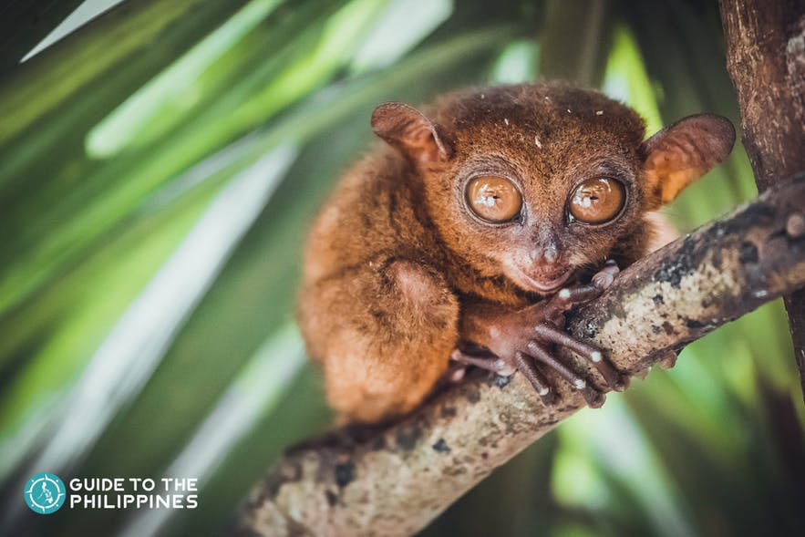
Like the Chocolate Hills, the tarsiers and their big eyes are synonymous to Bohol as well. These nocturnal creatures are considered to be the smallest primate in the world.
They grow to be just 15 centimeters long at most, and they're just so cute! Tarsiers can also be found in other Philippine destinations like Samar, Leyte, and parts of Mindanao. But Bohol is known for its tarsier sanctuary tours that help preserve and raise awareness about these species. -
Go Island-Hopping and See Bohol’s Marine Life
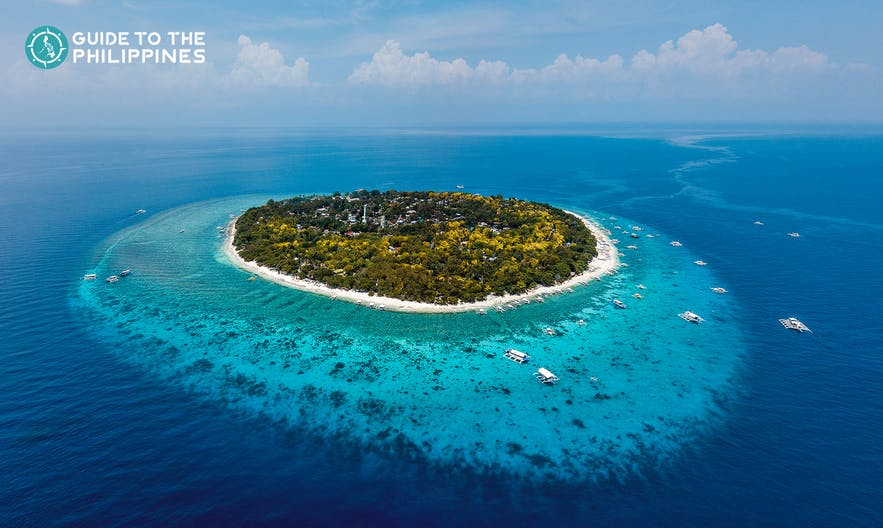
While Bohol already has white sand beaches along its coastline, there are also islands to explore where you can snorkel or dive aside from swimming or sunbathing.
Joining an island-hopping trip in Panglao is highly recommended when exploring Bohol. Here are some top destinations that you can visit during island-hopping tours in Bohol: